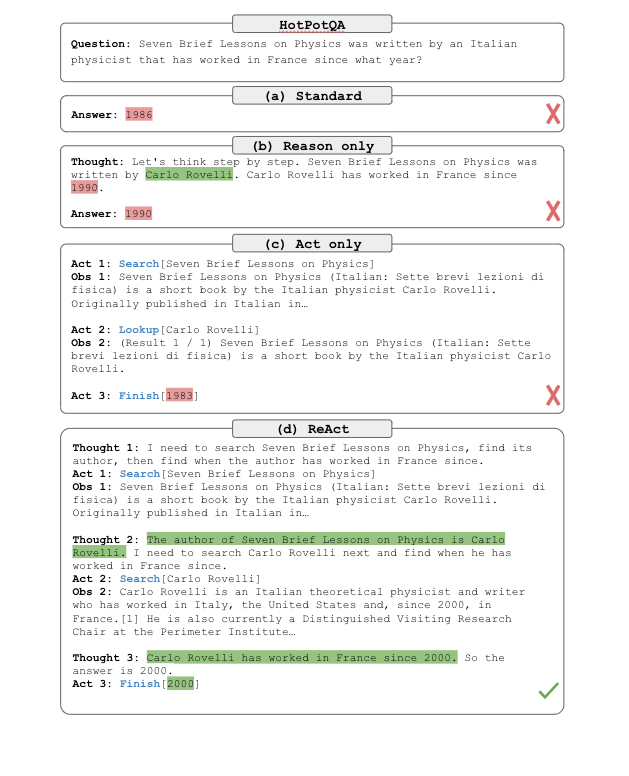
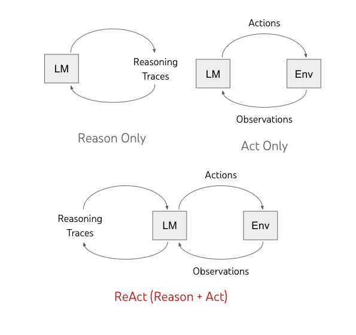
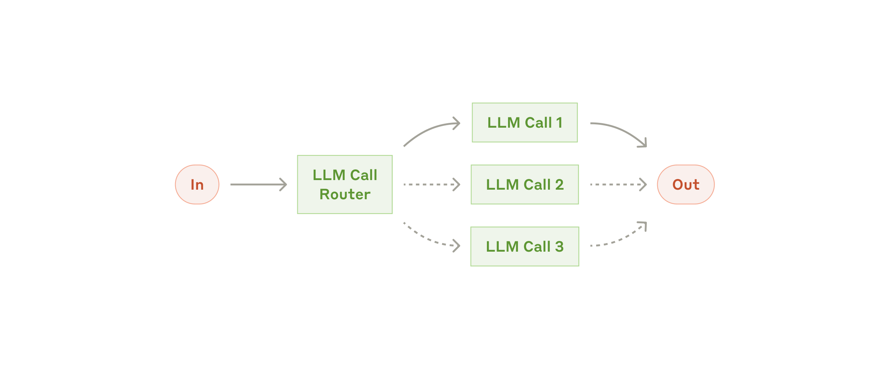
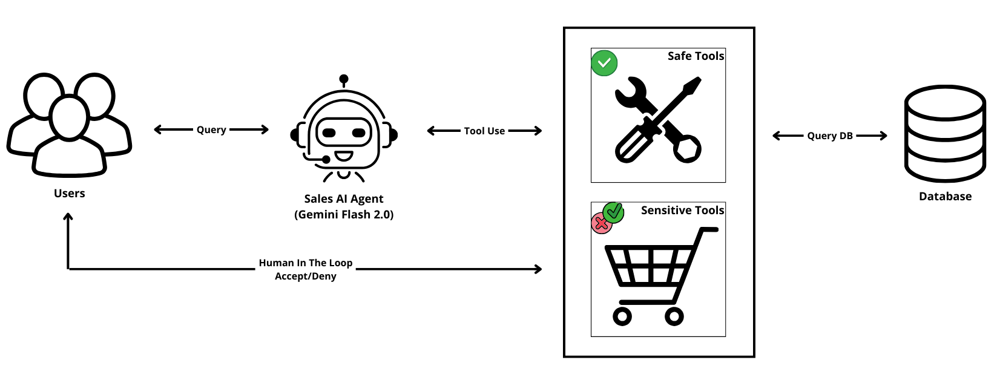

Agent Fundamentals: From ReAct to LangGraph#
Duration: 30 minutes
Learning Objectives:
Understand the ReAct (Reason + Act) pattern
See how memory enables multi-turn conversations
Compare manual agent loops vs framework abstractions
Recognize when to use each approach
The ReAct Pattern#
📚 Literature: Yao, S., Zhao, J., Yu, D., et al. (2023). “ReAct: Synergizing Reasoning and Acting in Language Models.” ICLR 2023.
This paper introduced the paradigm that underlies every major agent framework today. ReAct showed that interleaving reasoning traces (“thoughts”) with actions produces more reliable, interpretable agents than either approach alone. The key insight: when an LLM can explain its reasoning before acting, it makes fewer errors and recovers better from mistakes. For our purposes, understanding ReAct explains why Claude Code alternates between thinking and tool calls—it’s not arbitrary, but follows this empirically validated pattern.
Every agent framework—LangGraph, AutoGen, CrewAI—implements the same core pattern: ReAct (Reason + Act). By understanding this pattern, you understand what all these frameworks actually do.

ReAct outperforms standard prompting, chain-of-thought (CoT), and act-only approaches by combining reasoning with action. Figure from Yao et al. (2023). Source: Google Research
What is an Agent?#
An agent is fundamentally just a loop with tools. The LLM decides what to do, we execute tools, and feed results back until the LLM has enough information to answer.
User asks question
↓
┌─────────────────────────┐
│ LLM thinks about it │ ← REASON
└─────────────────────────┘
↓
Does LLM want to use a tool?
↓ Yes ↓ No
┌──────────────┐ ┌──────────────┐
│ Execute tool │ ← ACT │ Return answer│
└──────────────┘ └──────────────┘
↓
┌──────────────────────────┐
│ Add result to messages │ ← OBSERVE
└──────────────────────────┘
↓
└──────→ Back to "LLM thinks"
The key insight: the LLM decides which tools to use and when it has enough information. We just provide the tools and execute them.

The ReAct pattern: LLMs alternate between reasoning (thought), acting (tool use), and observing (results). Figure from Yao et al. (2023). Source: Google Research
Example 01: The Simplest Agent#
Let’s look at a basic agent built from scratch using just the OpenAI SDK. No frameworks, no abstractions—just the raw mechanics.
Full code: 01_react_loop on GitHub
Tool Definitions#
Tools are defined as JSON schemas that tell the LLM what’s available:
TOOLS = [
{
"type": "function",
"function": {
"name": "get_stock_price",
"description": "Get the current price of a stock given its ticker symbol",
"parameters": {
"type": "object",
"properties": {
"ticker": {
"type": "string",
"description": "Stock ticker symbol (e.g., AAPL, MSFT)"
}
},
"required": ["ticker"]
}
}
},
{
"type": "function",
"function": {
"name": "calculate",
"description": "Perform a mathematical calculation",
"parameters": {
"type": "object",
"properties": {
"expression": {
"type": "string",
"description": "Math expression to evaluate (e.g., '100 * 178.5')"
}
},
"required": ["expression"]
}
}
}
]
The Agent Loop#
def run_agent(client, model, user_message, max_iterations=10):
messages = [
{"role": "system", "content": "You are a helpful financial assistant..."},
{"role": "user", "content": user_message}
]
for iteration in range(max_iterations):
response = client.chat.completions.create(
model=model,
messages=messages,
tools=TOOLS,
)
message = response.choices[0].message
if message.tool_calls:
# Agent wants to use a tool - execute it
messages.append(message)
for tool_call in message.tool_calls:
result = execute_tool(tool_call.function.name,
json.loads(tool_call.function.arguments))
messages.append({
"role": "tool",
"tool_call_id": tool_call.id,
"content": result,
})
else:
# Agent is done - return final answer
return message.content
return "Max iterations reached"

The augmented LLM: A foundation model enhanced with retrieval, tools, and memory. Source: Anthropic
Example Output#
User: What's the price of AAPL? If I buy 100 shares, how much would that cost?
[Step 1] Agent decides to use tools:
Action: get_stock_price({'ticker': 'AAPL'})
Observation: {"ticker": "AAPL", "price": 178.5, "currency": "USD"}
[Step 2] Agent decides to use tools:
Action: calculate({'expression': '178.5 * 100'})
Observation: {"result": 17850.0}
[Final Answer]
The current price of AAPL (Apple Inc.) is $178.50.
If you buy 100 shares, it would cost you $17,850.00.
Discussion Question#
What happens if we remove the
max_iterationssafeguard?Think about what could go wrong if the loop never terminates.
Example 02: Adding Memory#
The agent in Example 01 forgets everything between calls. Each invocation starts fresh. Let’s fix that.
Full code: 02_agent_with_memory on GitHub
Key Insight: Memory is Just Message History#
class PortfolioAgent:
def __init__(self, client, model):
self.client = client
self.model = model
self.messages = [ # THIS IS THE MEMORY
{"role": "system", "content": "You are a portfolio assistant..."}
]
def chat(self, user_message: str):
# Add user message to history
self.messages.append({"role": "user", "content": user_message})
for _ in range(10):
response = client.chat.completions.create(
model=self.model,
messages=self.messages, # LLM sees EVERYTHING
tools=TOOLS,
)
# ... handle tool calls, add results to self.messages
return response.content
Memory Growth Visualization#
Turn |
User Says |
Messages Count |
Approx Tokens |
|---|---|---|---|
1 |
“What’s my portfolio worth?” |
5 |
~500 |
2 |
“How much AAPL do I have?” |
7 |
~700 |
3 |
“What if AAPL goes up 10%?” |
9 |
~900 |
4 |
“Sell half my position” |
11 |
~1100 |
… |
… |
… |
… |
N |
“What was my original question?” |
? |
Context limit! |
Checkpoint Question#
At what point does memory become a problem?
Most models have 128K context windows. At ~4 characters per token, that’s about 500K characters. How many turns until you hit limits?
Example 03: Multi-Tool Agents#
Real agents need multiple tools. The LLM must decide which tool(s) to use based on the question.
Full code: 03_multi_tool_agent on GitHub
Available Tools#
Tool |
Purpose |
When to Use |
|---|---|---|
|
Current price + daily change |
Market data queries |
|
P/E, sector, market cap |
Fundamental analysis |
|
Price history |
Trend analysis |
|
Recent headlines |
Sentiment/event analysis |
|
% return calculation |
Performance metrics |
Tool Selection in Action#
Simple query - single tool:
User: "What's the current price of NVDA?"
→ get_stock_price("NVDA")
Comparative query - multiple tools:
User: "Compare AAPL and JPM - which has better P/E?"
→ get_company_info("AAPL")
→ get_company_info("JPM")
→ [LLM compares and responds]
Complex query - many tools:
User: "Analyze MSFT: price, fundamentals, news, 7-day trend"
→ get_stock_price("MSFT")
→ get_company_info("MSFT")
→ get_news("MSFT")
→ get_historical_prices("MSFT", 7)
→ [LLM synthesizes everything]
Key Insight#
Tool descriptions are the interface between LLM reasoning and tool selection. Better descriptions → better choices.
📚 Literature: Tool Use & Parallel Execution
Kim, S., et al. (2024). “An LLM Compiler for Parallel Function Calling.” Drawing inspiration from classical compilers, LLMCompiler optimizes function execution by enabling parallel tool calls. The result: 3.7× latency reduction and 6.7× cost savings compared to sequential ReAct—critical for latency-sensitive trading applications where milliseconds matter.
Patil, S.G., et al. (2024). “Gorilla: Large Language Model Connected with Massive APIs.” NeurIPS 2024. Demonstrated that LLMs can surpass GPT-4 on API call accuracy through Retriever Aware Training (RAT). The key insight for our work: tool descriptions are the interface between LLM reasoning and tool selection—better descriptions lead to better choices.

Routing workflow: The agent classifies input and routes to the appropriate tool or handler. Source: Anthropic
From Manual to Framework: LangGraph#
Examples 01-03 build agents manually. This teaches the fundamentals, but production code uses frameworks.
Why Use a Framework?#
Feature |
Manual (01-03) |
LangGraph (04-08) |
|---|---|---|
Tool dispatch |
Write it yourself |
Automatic |
State management |
Manual lists |
Built-in TypedDict |
Streaming |
Complex async |
|
Debugging |
Print statements |
LangSmith tracing |
Persistence |
Write from scratch |
Checkpointing built-in |

The autonomous agent pattern: A loop of reasoning, tool execution, and environment feedback. Source: Anthropic
Example 04: StateGraph Basics#
LangGraph models workflows as directed graphs with state.
Full code: 04_langgraph_intro on GitHub
from langgraph.graph import StateGraph, END
from typing import TypedDict
# Define state that flows through the graph
class AnalysisState(TypedDict):
ticker: str
earnings_text: str
sentiment: str
key_points: list[str]
recommendation: str
# Define nodes (functions that transform state)
def analyze_sentiment(state: AnalysisState) -> dict:
"""Analyze sentiment of earnings text."""
prompt = f"Analyze sentiment: {state['earnings_text']}"
sentiment = call_llm(prompt)
return {"sentiment": sentiment}
def make_recommendation(state: AnalysisState) -> dict:
"""Generate recommendation based on sentiment."""
if state["sentiment"] == "positive":
return {"recommendation": "CONSIDER BUYING"}
elif state["sentiment"] == "negative":
return {"recommendation": "CONSIDER SELLING"}
return {"recommendation": "HOLD"}
# Build the graph
workflow = StateGraph(AnalysisState)
workflow.add_node("analyze_sentiment", analyze_sentiment)
workflow.add_node("make_recommendation", make_recommendation)
workflow.set_entry_point("analyze_sentiment")
workflow.add_edge("analyze_sentiment", "make_recommendation")
workflow.add_edge("make_recommendation", END)
graph = workflow.compile()
┌───────────────────┐ ┌────────────────────┐ ┌─────┐
│ analyze_sentiment │ ──→ │ make_recommendation│ ──→ │ END │
└───────────────────┘ └────────────────────┘ └─────┘

LangGraph models workflows as directed graphs with typed state flowing between nodes.
Example 05: create_react_agent#
LangGraph provides a pre-built ReAct agent that handles all the plumbing.
Full code: 05_langgraph_agent on GitHub
from langchain_core.tools import tool
from langchain_openai import ChatOpenAI
from langgraph.prebuilt import create_react_agent
from typing import Annotated
# Tools are now decorated functions
@tool
def get_stock_price(ticker: Annotated[str, "Stock ticker symbol"]) -> str:
"""Get the current price of a stock. Returns price in USD."""
price = STOCK_DATA.get(ticker.upper(), {}).get("price", 0)
return f"{ticker.upper()} is trading at ${price}"
@tool
def calculate(expression: Annotated[str, "Math expression to evaluate"]) -> str:
"""Perform a mathematical calculation."""
return str(eval(expression))
# Create the LLM
llm = ChatOpenAI(
model="openai/gpt-4o-mini",
base_url="https://openrouter.ai/api/v1",
api_key=config("OPENROUTER_API_KEY"),
)
# One-liner agent creation!
agent = create_react_agent(llm, [get_stock_price, calculate])
# Use it
for event in agent.stream({"messages": [("user", "What's AAPL price times 100?")]}):
print(event)
Compare the Code#
Manual (Example 01): ~100 lines
Define tool schemas
Write execution logic
Manage message history
Handle the loop
LangGraph (Example 05): ~30 lines
Decorate functions with
@toolCall
create_react_agentStream results
Models to Try#
All examples use OpenRouter to access multiple models cheaply:
Model |
Cost |
Quality |
Notes |
|---|---|---|---|
|
$0.02/1M |
Good for simple |
More mistakes |
|
$0.15/1M |
Reliable |
Default choice |
|
Free |
Variable |
Testing only |
|
$0.25/1M |
Fast, quality |
Good alternative |
Key Takeaways#
Agents are loops with tools - The ReAct pattern is universal
Memory is just message history - Context accumulates in the messages list
Tool descriptions guide selection - Better descriptions → better tool choices
LangGraph simplifies plumbing - Use manual for learning, framework for production
Choose your abstraction level - Understand what frameworks hide
Hands-On Exercise: Run the Examples#
# Clone the examples
git clone https://github.com/finm-33200/ai_inclass_examples.git
cd ai_inclass_examples/agents
# Set up environment
echo "OPENROUTER_API_KEY=your-key-here" > .env
# Run each example
cd 01_react_loop && python react_agent.py
cd ../02_agent_with_memory && python memory_agent.py
cd ../05_langgraph_agent && python langgraph_agent.py
Next Steps#
Now that you understand the fundamentals, let’s build a complete coding assistant in Building FlawedCode.